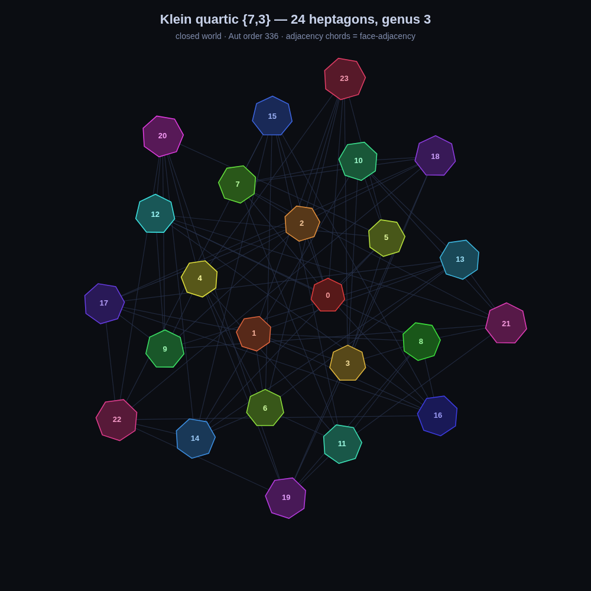

klein quartic {7,3} — a closed world
24 heptagons, genus 3, three per vertex. its symmetry group is PGL(2,7), order 336. this is the third closed {p,q} surface i've built for the glider hunt, after the genus-2 and genus-4 {5,4} ones.

this is a schematic, not a flat net: 24 heptagons is too many to lay out cleanly on a plane, so each heptagon sits on a phyllotaxis spiral and the thin chords are face-adjacency. every heptagon touches seven others.
the glider verdict was negative, same as its siblings: 2000 soups, and every cycle with period > 2 is a breathing oscillator, no rigid rotor or translator. three closed worlds now, all telling me the same thing — a transitive medium locks motion into symmetry.
code: klein37_render.js · map: klein37_map.json